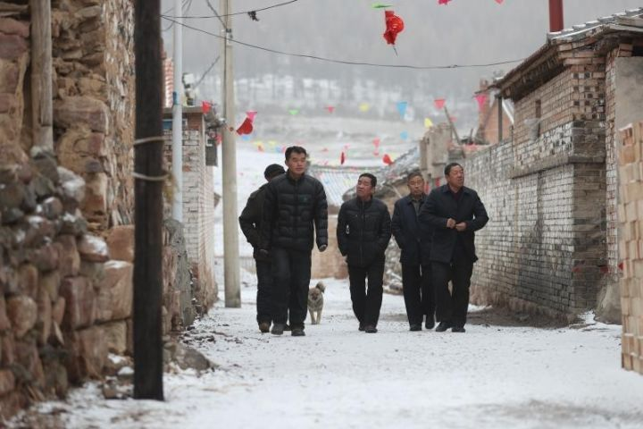
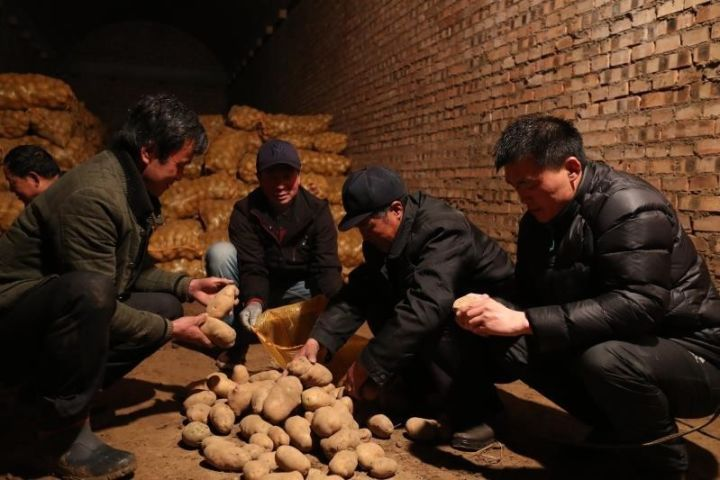

首页>>代表风采
房瑞标：整村脱贫，离不开这位“驻村书记”
 实现全村免费无线上网、建起六百多亩马铃薯种植基地、发展农家乐酒店……这些都是发生在山西岚县楼坊坪村的新变化。
过去两年，楼坊坪从远近闻名的贫困村到整村脱贫，离不开他们的“驻村书记”房瑞标。
实现全村免费无线上网、建起六百多亩马铃薯种植基地、发展农家乐酒店……这些都是发生在山西岚县楼坊坪村的新变化。
过去两年，楼坊坪从远近闻名的贫困村到整村脱贫，离不开他们的“驻村书记”房瑞标。
村里来了“新书记”
“我觉得我穿越了。”坐在科技日报记者对面，房瑞标这样形容自己第一次到楼坊坪村时的感受。
2015年8月，房瑞标被中国科协选派到楼坊坪任驻村“第一书记”。从首都北京到“老少边穷”，现实大大超出了他对贫困村的想象：距离县城四十多公里；平均海拔1700到2300米，冬季大雪封山；村里绝大多数都是老年人，六成以上是贫困户。

第一件事是“家访”。前三个月，常住村里的80多户人家，房瑞标每家去了三趟以上，他清楚每家贫困户的收入状况、致贫原因。“村情熟悉了，工作起来才能心里有底。”房瑞标说。
环境之艰苦，同事看在眼里。“他中间回来的时候剃了个光头，我们都笑他。一问才知道，是因为跳蚤太多，不得已才剃的。”同在科协工作的李安安说。除了“跳蚤关”，还有“语言关”，前三个月，山东人房瑞标听山西方言像外语，跟老乡坐在炕上聊得起劲，其实没明白几句。
“他在村里家家都交往，下地刨土豆割莜麦，不挑吃也不喊苦。”提起房瑞标，楼坊坪的村支书王军明赞不绝口。
不只是不嫌苦，房瑞标记得的都是老乡待自己的好：“平时谁家做了好吃的就叫我，只要办喜事就请我去坐首桌。”说到这些，他的高兴挂在脸上。
扎根土地的“科普员”
刚到楼坊坪时，村里手机信号断断续续，村民不方便跟外界沟通，发展也严重受限。房瑞标着了急。他四处奔走，最后得到山西省科协“科普中国乡村e站”项目的帮助。
2016年6月，移动宽带进了村，楼坊坪结束了没有网络的历史。7月，偏远山村更是实现了全村移动无线网络全覆盖，村民可以免费使用无线网。

2016年底，楼坊坪成功实现整村脱贫。
打通服务老乡“最后一公里”
聊到兴起，房瑞标拿起手机给记者展示起朋友圈。